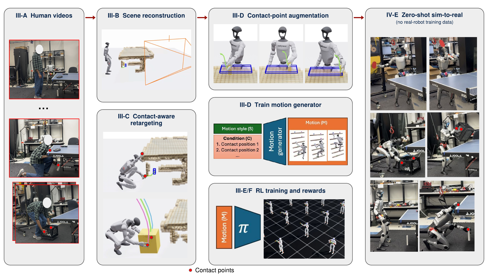

Learning humanoid interactive skills
VICARVideo Imitation with Contact-Aware Retargeting
for Humanoid Interactive Skills
Learn from human videos.
Preserve the contacts that make a skill work.
The idea
Human motion. Robot embodiment.
The same interaction.
Abstract
Third-person human videos offer a scalable alternative to task-specific reward engineering, teleoperation, and manually scripted demonstrations for humanoid loco-manipulation. VICAR learns interactive humanoid skills while preserving world-frame contact poses, motion speed, and collision clearance.
From observation to execution
A pipeline built around contact
Reconstruct the scene, preserve the interaction, and learn a reference that adapts.

Recover
Human motion and task-relevant scene geometry from video.
Retarget
Preserve global contacts, motion speed, and collision clearance.
Augment
Vary contact locations while retaining the demonstrated skill.
Execute
Track contact-conditioned references on the humanoid.
01 — Table tennis
Six serves. Distinct styles.
One source video per skill, with movable racket–ball contact points.
Video placeholders are ready for the final clips.
02 — Beyond serving
Reach, support, lift, climb.
Four skills spanning object interaction and whole-body coordination.
03 — Explore in 3D
One motion. New contact points.
Select a contact variation, then orbit the scene and scrub through the motion.
Step inside the motion
Explore contact-point variations in an interactive 3D scene.
Powered by Viser · loads on demandA schematic motion example to preview the interaction. Replace with VICAR recordings for research results.
Citation